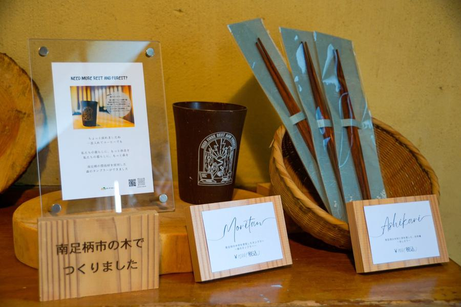
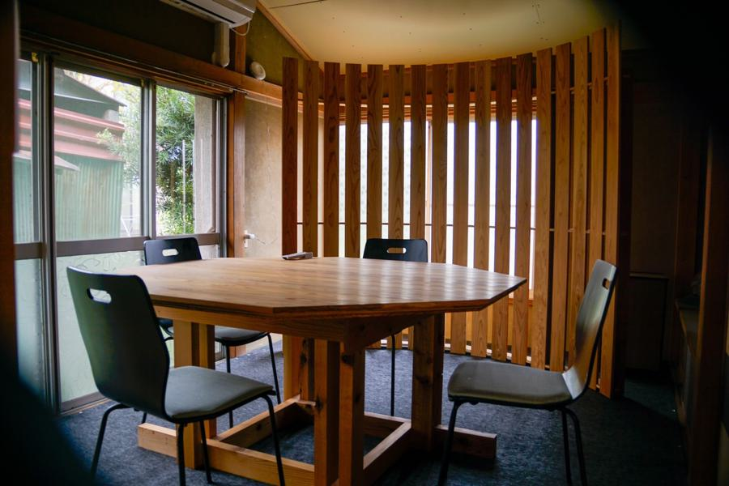
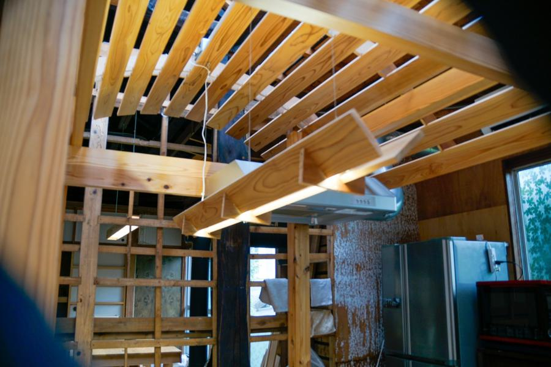
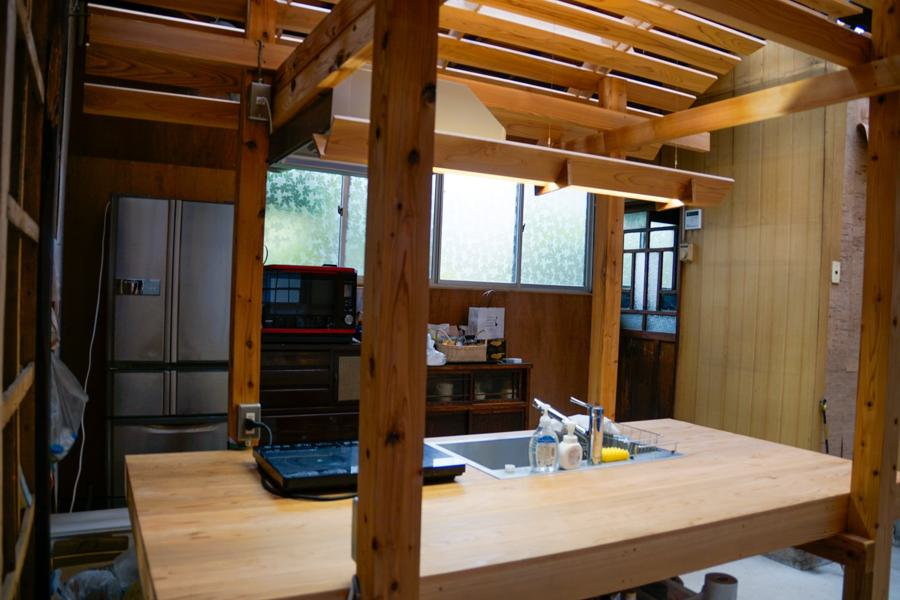
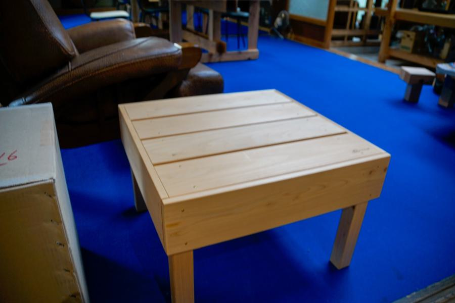
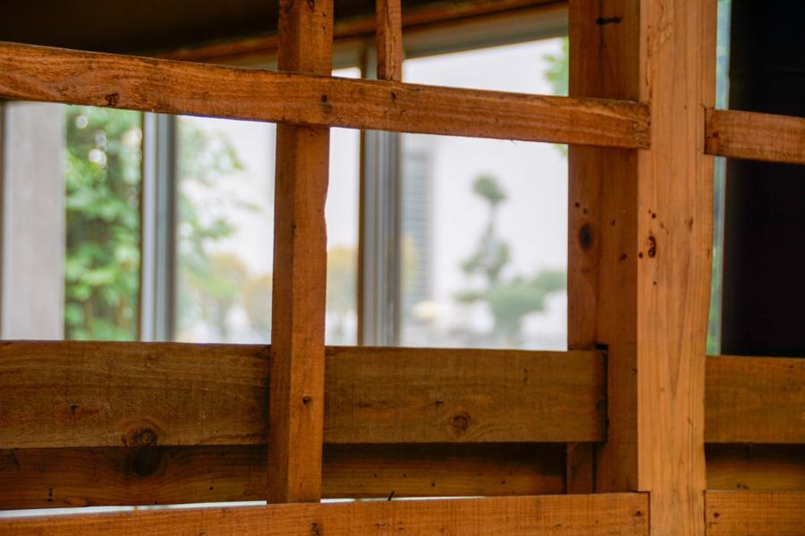
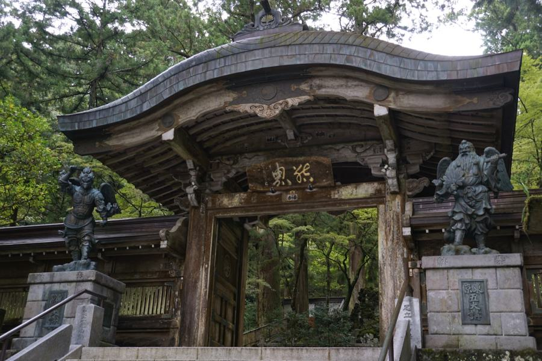

窓があるから外をみる
これから山と私たちはどう付き合っていけばいいのか
ただ山を「利用する」のではなく
山と「暮らす」ためにはどうしたらいいのか
ただ、未来を見ようとしなければ、新しい関係は生まれない
そんな山と人の新しい関係を垣間見る場として。
画像をクリックすると公式HPに飛べます
古民家を改装したスペースは、いろいろな人が足を運ぶ
地域交流の窓口となっていました。
玄関には南足柄産の木でつくられたお箸やコップが販売されていて
中は改装された綺麗な空間が広がっていました。

話し合いができるテーブルや椅子はSHOPBOTでつくられていました。

木造ならではの暖かみを感じることができ落ち着いた空間です。

ここはものづくりをする人はもちろんのこと、林業を営む人や、
地域の人々の交流の場所として地域の人に認知されています。
会議室のように使ったり、寝泊りしたりなんかも！（相談次第で合宿できるかも）

今回は地域交流拠点「mado.」を見学させてもらいました。

ここで活動している長谷川さんは現在衰退しつつある林業の在り方を考えていました。
私の故郷でも林業の担い手がおらず盆踊りの櫓が組めないということが最近ありました。
やはり伝統が失われるのは寂しいので、私達に何かできることはないかと考えました。

それがかわせみなりに出した結論でした。
というわけで学園祭までにブランコをつくることに挑戦するため、
初めてSHOPBOTを使いました。その記録も是非見てみてください